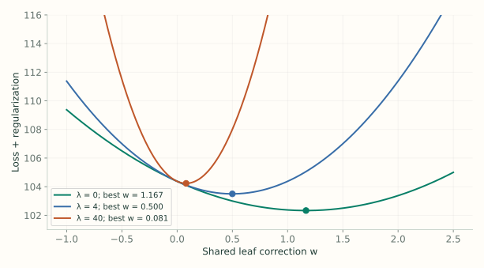
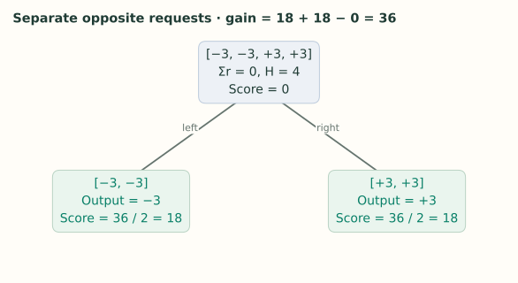

3. The Mathematics: Where the Formulas Come From
Notes on StatQuest with Josh Starmer · The Mathematics: Where the Formulas Come From · 27:24 video. Original explanations and redrawn figures accompany the video.
The first two videos use two formulas: one for a leaf’s output, another for its similarity score. They come from the same question: how much can a shared correction reduce the loss in this leaf?
Pick one leaf and try a correction
Video 2:48 ↗Keep the current predictions fixed. Put some training rows in a leaf and propose adding the same number $w$ to all their predictions. For squared-error regression, the leaf objective is
$F_i$ is row $i$’s prediction before this tree. The sum measures the errors after adding $w$. The last term penalizes a large correction, whether positive or negative.
The lecture’s smaller regression example uses targets $[-10,7,8]$ and current predictions $[0.5,0.5,0.5]$. Its residuals are $[-10.5,6.5,7.5]$. At $w=0$ and $\lambda=0$, the loss is
Trying $w=1$ lowers it to 102.375. Trying $w=-1$ raises it to 109.375. We want the bottom of this curve, not a guess chosen by trial and error.
Regularization moves the best correction toward zero
Video 5:30 ↗For these three rows, expanding the squares gives
The linear term favors a positive correction because the residuals sum to $3.5$. Increasing $\lambda$ makes the quadratic penalty steeper, so the minimum shifts closer to zero.

The full tree objective also charges $\gamma$ per leaf. While choosing the value of one existing leaf, its leaf count is fixed, so that charge does not affect the best $w$. It matters when comparing tree structures.
Use the local slope and curvature for other losses
Video 10:51 ↗For a general loss, adding $w$ may not produce a simple quadratic. XGBoost uses a second-order Taylor approximation around the current prediction:
Here $g_i$ is the loss’s slope with respect to $F_i$, and $h_i$ is its second derivative, or curvature. The slope tells us which direction lowers the loss. Curvature tells us how quickly that slope changes as we move.
The first term is the old loss. It contains no $w$, so it cannot change which correction minimizes the expression. Add the remaining terms across the leaf, include regularization, and define $G=\sum g_i$ and $H=\sum h_i$:
Many rows have now become two totals: $G$ adds their slopes, and $H$ adds their curvatures. For squared error this quadratic is exact. For binary log loss it is a local approximation.
Find the bottom of the quadratic
Video 13:28 ↗Differentiate with respect to the single correction $w$, and set the slope to zero:
When $H+\lambda>0$, the curve opens upward, so this stationary point is its minimum. If the combined slope is negative, the correction is positive; if the slope is positive, the correction is negative.
For the three-row example, $G=-3.5$ and $H=3$. With $\lambda=4$, the output is $3.5/7=0.5$. Learning rate is a separate step: at $\eta=0.3$, the ensemble actually adds $0.3(0.5)=0.15$.
Plug in the loss to recover the first two videos
Video 14:45 ↗| Task and loss | Slope $g_i$ | Curvature $h_i$ | Leaf output |
|---|---|---|---|
| Regression: $\frac12(y_i-F_i)^2$ | $F_i-y_i=-r_i$ | $1$ | $\displaystyle\frac{\sum r_i}{n_{\text{leaf}}+\lambda}$ |
| Binary classification: log loss | $p_i-y_i=-r_i$ | $p_i(1-p_i)$ | $\displaystyle\frac{\sum r_i}{\sum p_i(1-p_i)+\lambda}$ |
For regression, the minus sign in $-G$ turns the sum of negative residuals back into the sum of residuals. Adding one curvature value of 1 per row gives the row count.
For classification, derivatives are taken with respect to the log-odds score $F$, where $p=\operatorname{sigmoid}(F)$. Binary log loss can be written $\ell(y,F)=\log(1+e^F)-yF$. Its first derivative is $p-y$, and differentiating once more gives $p(1-p)$. That is why this denominator produces a score correction rather than a probability correction.
If you want every step of that conversion, the gradient boosting classification derivation covers it.
Evaluate the best correction to get the score
Video 20:07 ↗Finding $w^*$ tells us where the minimum is. Substituting it into $Q$ tells us how much the objective can improve:
The value is negative because this is the change relative to making no correction. A more negative value means a larger predicted loss reduction. Flip its sign to express an improvement; the lecture then uses twice that improvement as its similarity score:
Splitting replaces one optimized leaf with two optimized leaves. With this score convention, its gain is $S_L+S_R-S_P$.

Where did the factor of ½ go? The paper writes the objective as $\sum\ell+\gamma_{\text{obj}}T+\frac{\lambda}{2}\sum_jw_j^2$. Under that definition, the benefit of adding one leaf through a split is
The videos use the unhalved score and compare its gain with a threshold on that same scale. XGBoost’s basic tree scorer also returns $G^2/(H+\lambda)$. Scaling every score preserves candidate rankings, but a pruning threshold must use the matching scale: threshold 10 on the unhalved gain corresponds to penalty 5 in the objective above.
This convention explains the apparent difference between the lecture’s arithmetic and the objective derivation in the documentation; it does not change the leaf output.
Cover is the total curvature we already calculated
Video 25:07 ↗Cover is simply $H=\sum h_i$. For unweighted squared-error regression, it equals the row count. For binary classification, it equals $\sum p_i(1-p_i)$.
We now have the whole connection: the loss supplies slopes and curvatures; their totals give a leaf correction; evaluating that correction gives a score; comparing parent and child scores chooses a feature split. The new tree then supplies the scaled corrections used by the ensemble.